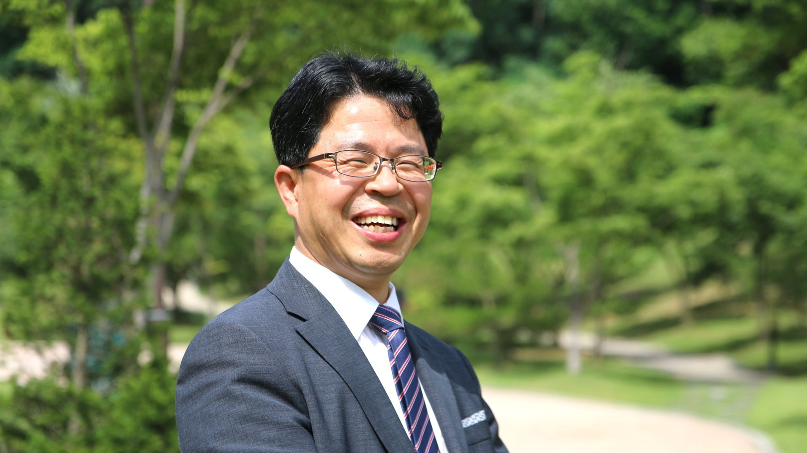
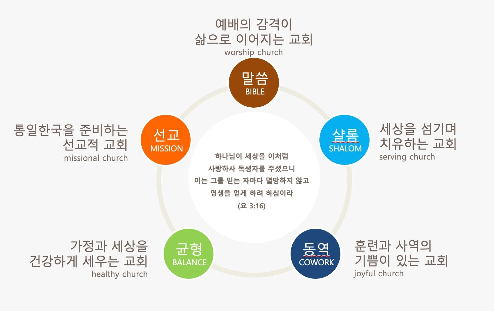

진중교회를 찾아주신
여러분을 진심으로 환영합니다.
예봉산과 운길산이 좌우로 둘러서고 앞으로는 물의정원과 북한강이 흐르는 이 아름다운 마을에서, 진중교회는 1964년부터 오늘까지 복음으로 이웃을 섬겨 왔습니다.
저희는 예배의 감격이 삶으로 이어지고, 세상을 치유하며 섬기고, 가정과 세상을 건강하게 세우며, 통일한국을 준비하는 선교적 교회를 꿈꿉니다.
지치고 쉼이 필요한 분, 하나님을 찾는 분 누구라도 이곳에서 따뜻한 환대를 누리시기를 바랍니다. 언제든 마을의 벗이 되어 여러분과 함께 걷겠습니다.

- 장로회신학대학교 신학대학원 (M.Div)
- 장로회신학대학교 대학원 (Th.M · 선교신학)
- 숭실대학교 대학원 기독교통일지도자학과 (Ph.D 논문학기)
Sermon
설교 한 편
하나님이 당신을 사랑하십니다
요한복음 3:16 설교 中
우리는 작은 물건 하나를 사기 위해서도 값을 지불합니다. 비용을 지불한 후에야 우리는 그것을 소유합니다. 하나님은 우리에게 영원한 생명을 주시기 위해 값을 지불하셨습니다. 독생자 예수님을 내어주셨습니다. 우리는 예수님의 생명과 맞바꾼 사람들입니다. 사고가 발생할 때 순직하는 사람들이 있습니다. 그분들의 생명, 목숨 값을 계산할 수 있겠습니까? 그것은 세상 어떤 것과도 바꿀 수 없습니다.
하나님은 아들의 목숨과 우리의 생명을 바꾸셨습니다. 아들의 목숨과 여러분의 생명을 바꾸셨습니다. 여러분은 얼마를 받으면 자녀의 목숨과 바꿀 수 있습니까? 값을 계산할 수 있겠습니까? 계산을 할 수 없습니다. 그래서 하나님의 사랑은 값 없이 주시는 선물, 은혜입니다. 다른 말로는 설명이 되지 않습니다.
Philosophy
목회 철학

예배의 감격이 삶으로 이어지는 교회
하나님이 주신 유일한 계시의 말씀인 성경이 모든 신앙생활의 원칙입니다. 목회자는 말씀을 깊이 연구하고 전달하여, 하나님의 말씀을 맡은 예언(預言)의 사명을 잘 감당해야 합니다.
세상을 치유하며 섬기는 교회
섬김은 예배를 통해 형성된 영성이 삶으로 이어지는 현장입니다. 고아와 과부처럼 지극히 작은 자를 돌보는 참된 경건으로 이웃 사랑을 실천하여 교회가 지역에서 사명을 감당해야 합니다.
훈련과 사역의 기쁨이 있는 교회
담임 목회자 혼자서 모든 것을 다 할 수 없습니다. 담임목사는 하나님께서 성도들에게 부어 주신 은사를 잘 계발하여 동역자로 세우고, 멘토링을 통해 사역의 방향을 잡아주고 더욱 잘 하도록 격려해 주어야 합니다.
가정과 세상을 건강하게 세우는 교회
목회자는 신학과 사상의 극단에 치우치지 않고 균형을 이루어 설교합니다. 성도는 지(知)·정(情)·의(意)가 균형 잡힌 믿음을 가지고, 삶의 균형을 이루어야 합니다. 성도의 삶도 가정과 교회, 그리고 세상에서 균형을 이루어야 합니다.
통일한국을 준비하는 선교적 교회
선교는 교회가 가진 프로그램 중의 하나가 아니라 교회의 본질입니다. 선교는 복음전도와 사회봉사를 포함합니다. 선교에서 북한은 예외가 아닙니다. 북한이탈주민을 섬기는 사역은 통일 시대를 준비하는 첫걸음입니다. 교회는 만물 안에서 만물을 충만하게 하는 역할을 감당해야 합니다.